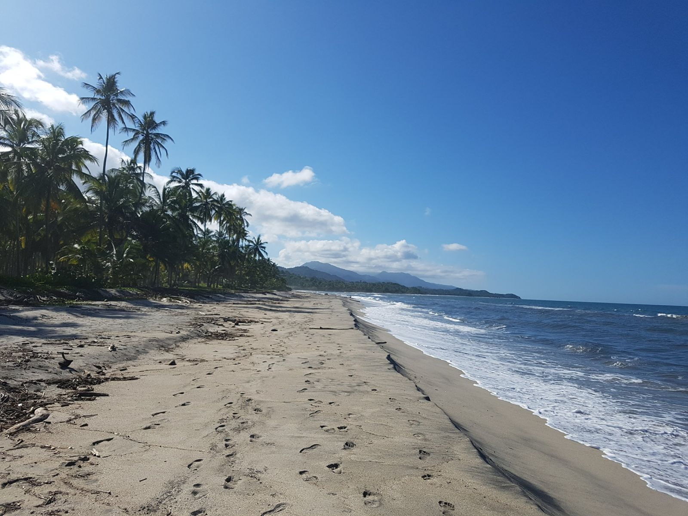
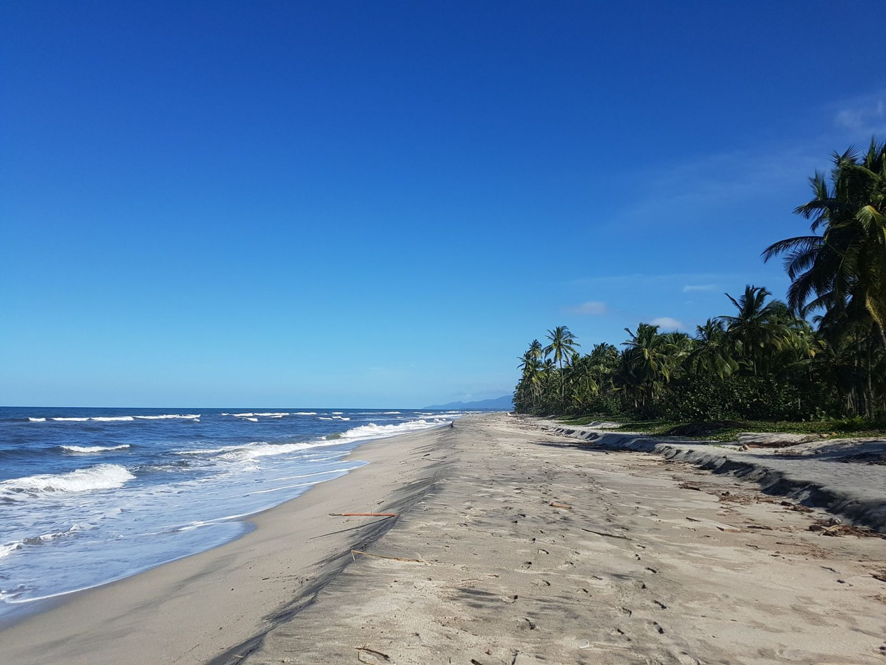
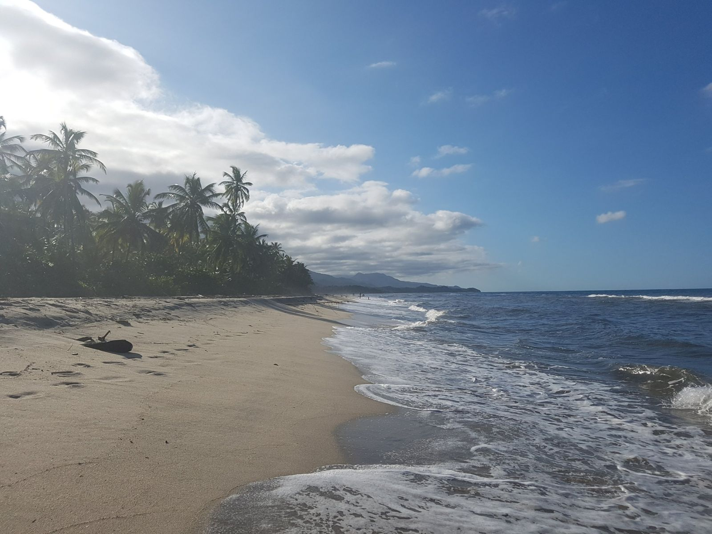
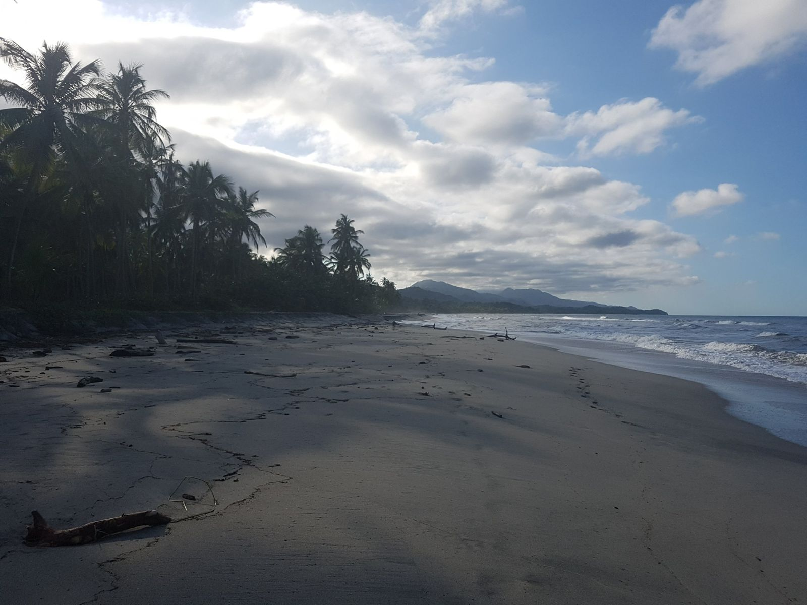
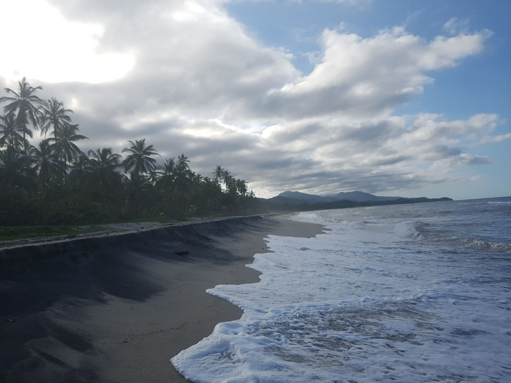
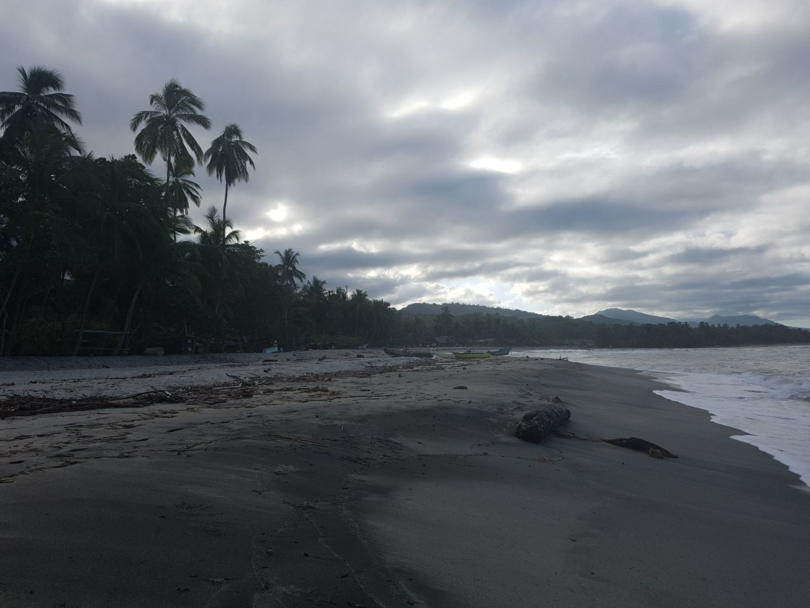
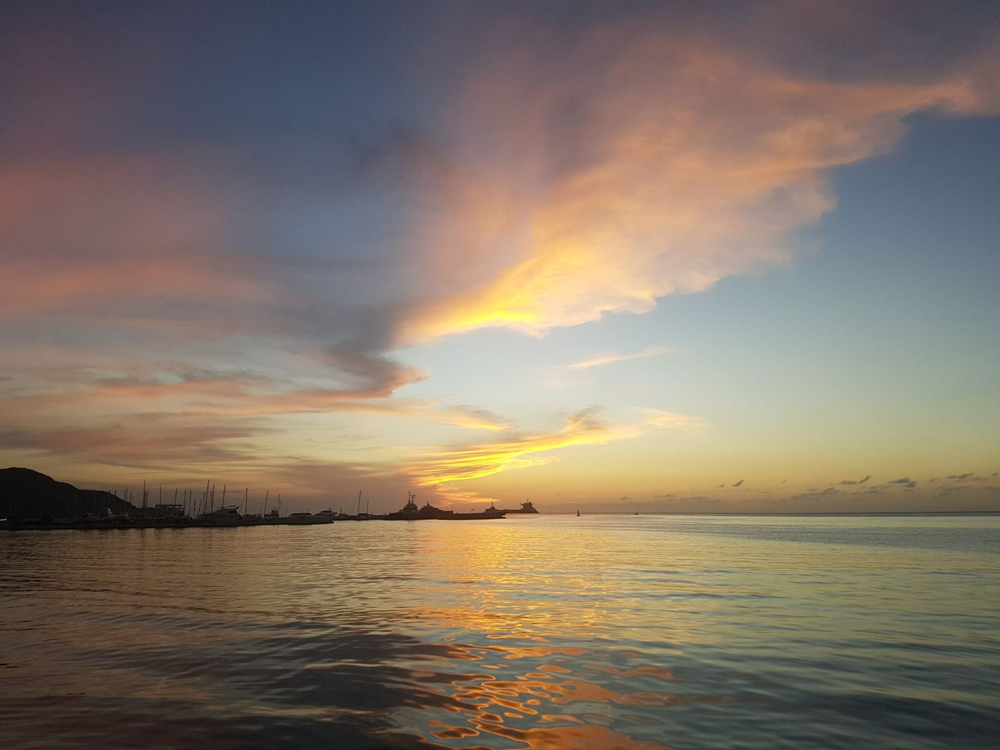
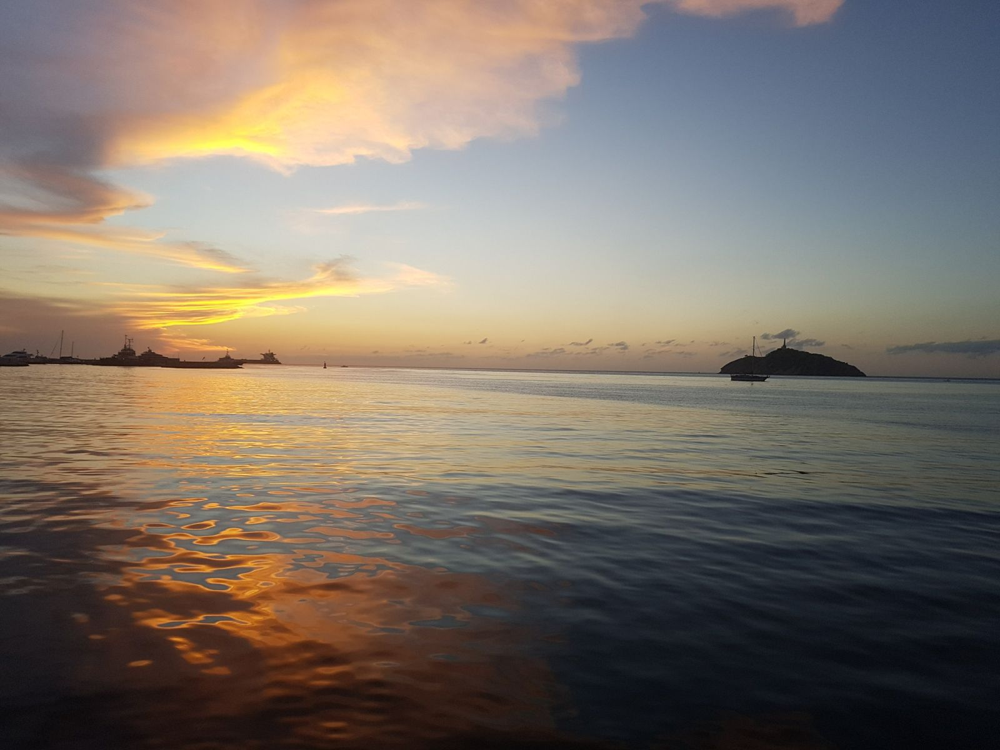
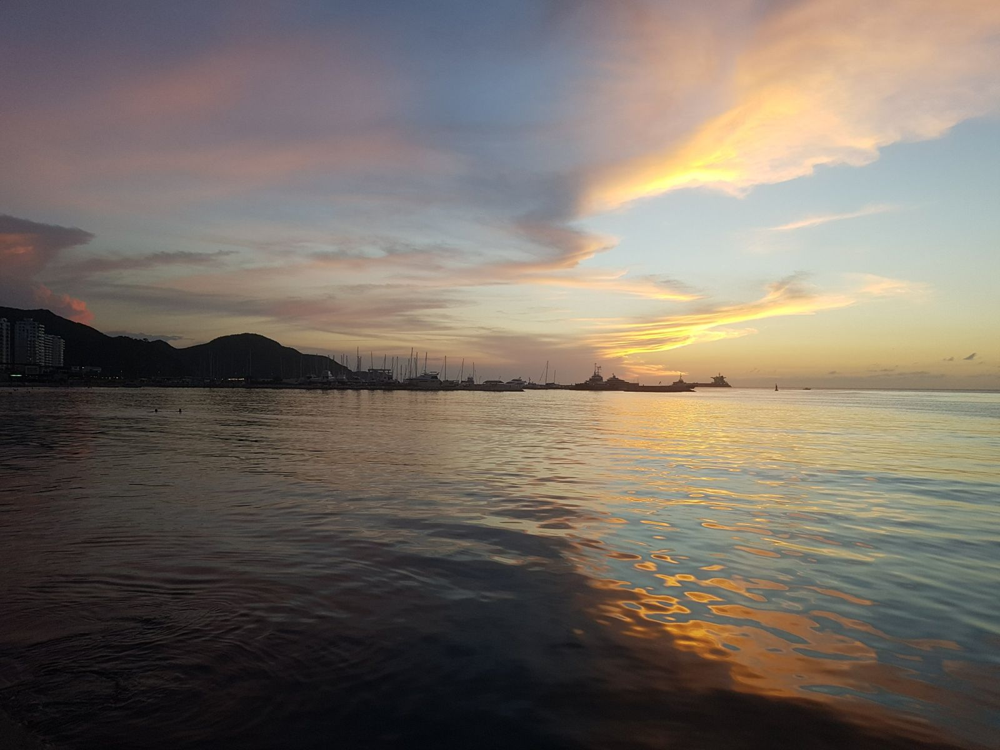

South America · Colombia · Costeño Beach
Costeño Beach and Santa Marta, December 2, 2017
On December 2 I left Taganga for a day on Costeño Beach, east of Santa Marta on the road to Palomino. I came back to Santa Marta for the sunset, and that night I left for Cartagena. I was alone.
My conclusion up front: Costeño Beach is quiet, and it is a place to walk rather than to swim. The beach is long and almost empty, with coconut palms along it and a rough sea. I do not remember how I got there, how long I stayed or what I paid for anything, and I did not write it down.
The times are my phone's clock, and Google Photos stores them in Colombian time (GMT-5). The boxes hold research I did in November 2026, each with a source and a date, so you can tell it apart from what I remember.
The beach
Google Photos places the day's photos near Costeño Beach, on the coast road between Santa Marta and Palomino. I do not remember how I got there, where I slept or ate, or how long I stayed. What I have is six photos of a long empty beach, taken from 14:28 to 15:40.
The first two are from 14:28: bright sun, a deep blue sky and white surf, with footprints in the sand and a stand of coconut palms at the edge of the beach. At 15:25 there is a cloud on the left but the sky is still blue. At 15:29 and 15:32 the light has dropped and the sand looks darker, almost grey, with a steep sand bank above the waterline. At 15:40 the cloud is thick and a few fishing boats lie on the sand near some huts at the far end.






What I found: the most useful guide I found is old. In 2019 a travel blog said to take the bus marked for Palomino from the market in Santa Marta, for about 10,000 pesos and about an hour and a half, and to ask to be dropped at the road to the beach. From the highway you take a motorbike taxi for about 10,000 pesos or walk about 30 minutes (Cartagena Explorer, published November 2019, prices from April 2019). For the bus to Palomino today, one page lists fares of 14,000 to 29,500 pesos and a journey of about two hours, from the main terminal or from a stop behind the central market (Gecko Routes, updated August 20, 2026).
What I did not find: a current fare to Costeño itself, a timetable, or whether those buses still stop at the road to the beach. The 2019 prices are out of date, so use them only as a rough guide.
The sunset in Santa Marta, 17:39
The last photos of the day are four sunset pictures within about 20 seconds, at 17:39, and Google Photos places them on the waterfront in Santa Marta, next to the marina. The sky is orange and pink over the water, and a few boats are moored at the marina. There is a small rocky island with a tower on top at the entrance of the bay. I took them from the water's edge, low down, so the sea fills the lower half.



Leaving that night
That evening I went to the bus terminal in Santa Marta and met some people, and we shared a taxi to Cartagena. I do not remember how we agreed it, or what we paid. I do not know what time we left. The next chapter starts with the taxi, and with the road to Cartagena.
What I do not remember
I do not remember how I reached Costeño Beach, where I ate, or how long I stayed. I do not remember how I got back to Santa Marta, what I paid for the shared taxi or when it left. I also took no notes. The photos give the day in order, and nothing more.